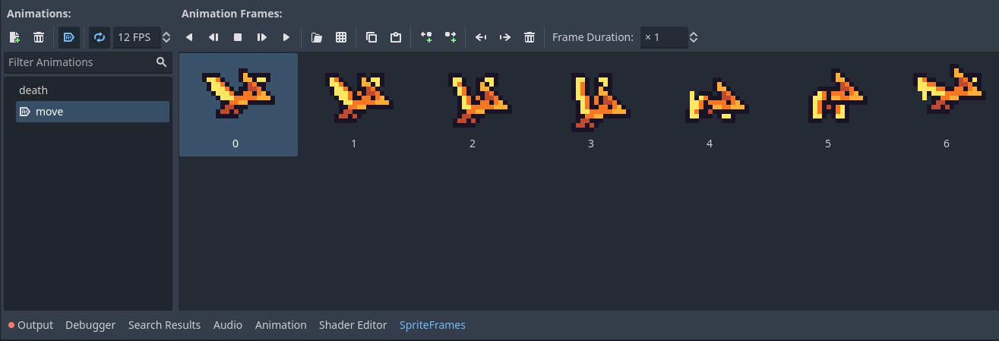
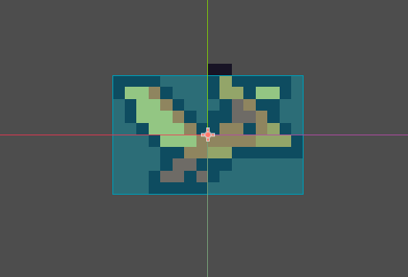
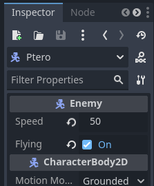
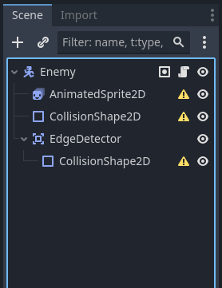
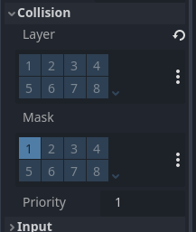
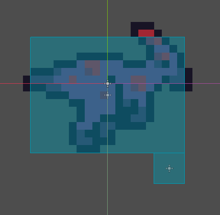

Advanced Enemies
IMPORTANT! This module requires the Simple Enemy Part 1 and Simple Enemy Part 2 modules to be completed first!
In this module we build off of our simple enemy to create some more advanced enemies: the anklyo, ptero and para!
Note that each of these enemies can be added individually. If you don't want one, just skip it!
Creating the Ptero
The ptero will be a simple flying enemy. To add the functionality of flight to enemies, open up the enemy script. In the variables section, add a new @export variable named flying and set it to false by default, like so:
@export var speed = 25.0
@export var flying = false
var gravity = ProjectSettings.get_setting("physics/2d/default_gravity")
@onready var sprite = $AnimatedSprite2D
@onready var shape = $CollisionShape2D
var direction = Vector2.RIGHT
var is_moving = trueNext, in the _physics_process function, we will edit the if not is_on_floor() condition by add a and not flying in order to disable gravity if the enemy is flying, like so:
func _physics_process(delta):
if not is_on_floor() and not flying: velocity.y += gravity * delta
velocity.x = direction.x * speed
if not is_moving: velocity = Vector2.ZERO
move_and_slide()
if is_on_wall(): change_direction()Next, in order to create the new enemy itself, we will repeat the same steps we used for the trike in the Simple Enemy Part 2 module, starting by creating a new inherited scene from our enemy scene.

Then, rename the Enemy node to Ptero and create a new sprite frames, using the ptero sprites. You can find them in the Advanced Enemies folder in your VGDC-2024 Assets folder.
If you are not taking this course in person, you can download the assets Here
Next, create a new rectangle shape for the ptero's CollisionShape2D node and resize it to fit the sprite.
Finally, select the Ptero node and go to the inspector. Set the speed you want it to move and make sure to check the flying box like so:
And that is the Ptero! Go ahead and save the scene and add it to your level.
Creating the Para
Next we will make the Para, an enemy that will turn around when it reaches the edge of a platform instead of falling. To get started, open the enemy scene, right click the Enemy node and create a new Area2D node as a child. Name the new node EdgeDetector and create a new CollisionShape2D node as it's child. The Enemy scene tree should look something like this:
Now select the EdgeDetector node. In the inspector go to the collision section. Set the layers to be empty and the mask to the world layer like so:
Note that we did not set a collision shape for our CollisionShape2D node yet. This is because we want each enemy type to be able to use it's own unique shape to detect the edge of platforms. If you don't want an enemy to detect ledges, all you have to do is not add a collision shape for that enemy.
Next, with the EdgeDetector node still selected, go to the node tab in the inspector. Under signals connect a new body_exited signal to the enemy script. Inside of the new _on_edge_detector_body_exited function, add a call to our change_direction method like so:
func _on_edge_detector_body_exited(body):
change_direction()However there is still a problem. When the enemy changes direction, it's edge detector stays on the same side! In order to remedy this, let's first add a reference of the EdgeDetector's CollisionShape2D node in our variables. Let's call it edge_shape.
@export var speed = 25.0
@export var flying = false
var gravity = ProjectSettings.get_setting("physics/2d/default_gravity")
@onready var sprite = $AnimatedSprite2D
@onready var shape = $CollisionShape2D
@onready var edge_shape = $EdgeDetector/CollisionShape2D
var direction = Vector2.RIGHT
var is_moving = trueNow that we have access to the CollisionShaped2D node, go to the change_direction function. In it we will add a line that flips the edge_shape's horizontal position (though we will leave its vertical position alone.) We can do this like so:
func change_direction():
direction = -direction
sprite.flip_h = not sprite.flip_h
edge_shape.position.x = -edge_shape.position.xFinally we can finally make the Para itself! In the filesystem right click the enemy scene and create a new inherited scene. Change the name of the root node to Para, then repeat the same process we did for the Ptero and Trike to add the Para's sprites, animations and collision shape (you can frind the sprites in the Advanced Enemies folder of your VGDC-2024 Assets folder.) Then select the CollisionShape2D node that is a child of the EdgeDetector node. In the inspector create a new rectangle collision shape and edit it's size so its a small square in on the front edge of the enemy's collision shape like so:
And that's the Para! Go ahead and save the scene and add it to your level.
Creating the Anklyo
Our final enemy is the Anklyo, a slow moving enemy that doesn't die, instead being temporarily stunned when jumped on. To get started, open up the enemy script. In the variables, add a new @export variable called invincible and set it to false
@export var speed = 25.0
@export var flying = false
@export var invincible = false
var gravity = ProjectSettings.get_setting("physics/2d/default_gravity")
@onready var sprite = $AnimatedSprite2D
@onready var shape = $CollisionShape2D
@onready var edge_shape = $EdgeDetector/CollisionShape2D
var direction = Vector2.RIGHT
var is_moving = trueNext, in the die function, we will need to make some edits. First, we only want the enemy to disable collision if it is not invincible, and two, after the death animation finishes we want the enemy to reset it's walk animation and movement if it's invincible. We can achieve this with the following code:
func die():
is_moving = false
if not invincible: call_deferred("disable_collision")
sprite.stop()
sprite.play("death")
await sprite.animation_finished
if invincible:
is_moving = true
sprite.play("move")
else:
queue_free()Finally, follow the same steps we used for the previous enemies to create a new inherited enemy scene, change the root node name to Anklyo, add the sprites, animations and collision shape(s), and finally save the scene and add it to your level (don't forget to check invincible in the inspector of the Anklyo!)
Note that if you want a longer delay for the Anklyo's stun, you can always increase the frame duration of frame 3 of it's death animation.
And that's all the enemies done! Test them out, try out some different speeds and options, then go ahead and move onto another module.